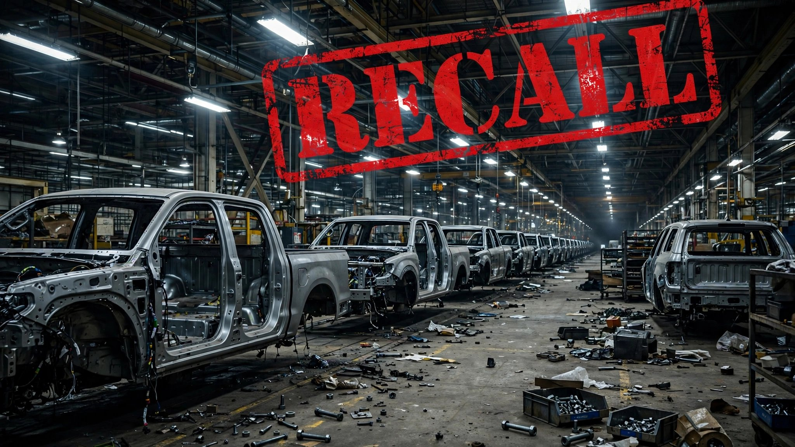

Stellantis Has Recalled 2.6 Vehicles for Every One It Sold Last Year. Most of the Defects Are Bolts.

Stellantis sold 1,260,344 vehicles in the United States in 2025.[1] Through the first nine weeks of the 2026 recall season, the company has recalled approximately 3.27 million. That is a ratio of 2.6 recalled vehicles for every one sold, and the calendar still has four months left.
Two campaigns account for most of the volume. On June 9, NHTSA announced 1,076,999 Jeep Wrangler and Gladiator models recalled because the power steering pump wiring can overheat and ignite a fire even when the vehicle is parked with the ignition off.[2] Fifty-one fires and one injury had already been reported, and Stellantis told owners to park outside until the repair was complete. On July 31, Stellantis added 1,271,294 Ram 1500 pickups because second-row seat belt buckle anchors may not have been properly attached to the vehicle body structure during assembly.[3]
Smaller campaigns padded the total: 419,000 vehicles for improper side airbag deployment, 460,000 Ram trucks and Jeep SUVs for inoperable trailer brakes, 17,277 Chrysler Pacifica Hybrids for a battery pack fire defect, 12,592 Ram 1500s for headlamp wiring, and 11,980 Grand Wagoneers for yet another issue.[4] Together they add up to a number that would be alarming for any automaker. For one that sold barely 1.26 million vehicles the year before, it is something closer to structural failure.
Look at the defect descriptions and what they reveal about the production floor. Seat belt anchors not bolted to the body. Wiring harnesses routed too close to hot surfaces. Airbag calibration errors that should have been caught before the vehicle left the plant. Trailer brake connectors not properly secured. These are not software glitches discovered through telemetry or design flaws revealed by a new crash test protocol, but the work of hands that did not finish the job on the assembly line, caught months or years after the trucks rolled off the end of it.
FARS data shows the vehicles now under recall carry a combined body count of 6,963 occupant deaths over the 2014-to-2023 period across the Jeep Wrangler (1,842 deaths, 0.84 per 100 million VMT), the Dodge Ram/Ram 1500 combined fleet (5,121 deaths), and the Chrysler Pacifica (160 deaths).[5] The Wrangler's death rate already sits above the SUV class average of 0.79. Adding a fire defect that activates while the vehicle is parked in a garage does not improve the arithmetic.
Stellantis says only 0.1 percent of the Ram 1500 population actually has the seat belt defect, which works out to roughly 1,271 trucks with seat belts that may not hold in a crash, scattered across eight model years and every state in the country, identified by production and service records rather than a clear VIN sequence. Good luck finding yours without scheduling that dealer inspection.
The industry-wide recall-to-sales ratio exceeded 1.0 in 2025, when 29.3 million vehicles were recalled against 15.9 million sold.[6] But the industry average is 1.84. Stellantis is running at 2.6 with a third of the year remaining, on a sales base that shrank 3 percent from 2024 and 15 percent from 2023. The denominator is shrinking while the numerator accelerates.
If you own a 2019 through 2026 Ram 1500, a 2021 through 2025 Wrangler or Gladiator, or a 2020 through 2022 Pacifica Hybrid, check your VIN at nhtsa.gov/recalls today. The Wrangler and Pacifica Hybrid recalls carry a "park outside" advisory. Taking it seriously is not optional when the defect is fire in a parked vehicle.
Sources & References
- Stellantis 2025 US sales: 1,260,344 vehicles. Akron Beacon Journal, Jan 5 2026. beaconjournal.com
- Stellantis recalls 1,076,999 Jeep Wrangler/Gladiator over fire risk, NHTSA campaign 26V363. reuters.com
- Stellantis recalls 1,271,294 Ram 1500 over seat belt buckle anchor, NHTSA campaign 67D. reuters.com
- Additional Stellantis recalls: NHTSA recall database and MoparInsiders recall archive. moparinsiders.com
- NHTSA, Fatality Analysis Reporting System (FARS), 2014–2023. nhtsa.gov
- NHTSA issued 997 recalls affecting 29+ million vehicles in 2025. nhtsa.gov